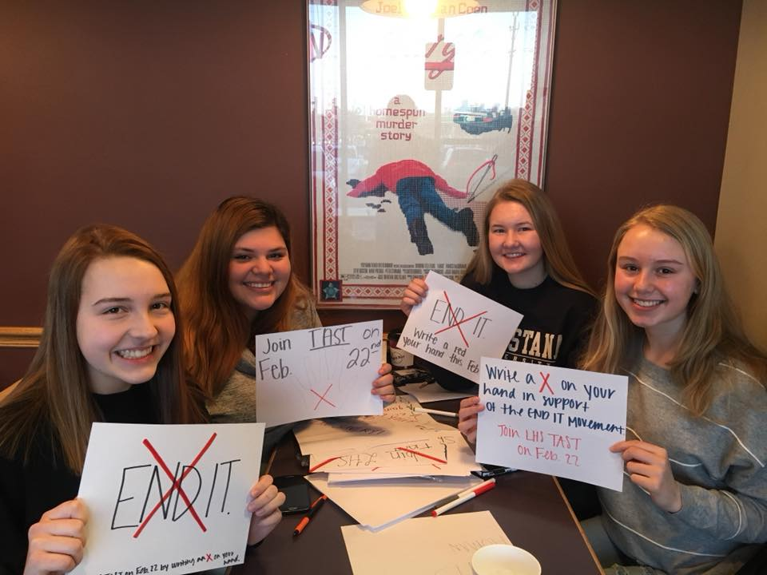
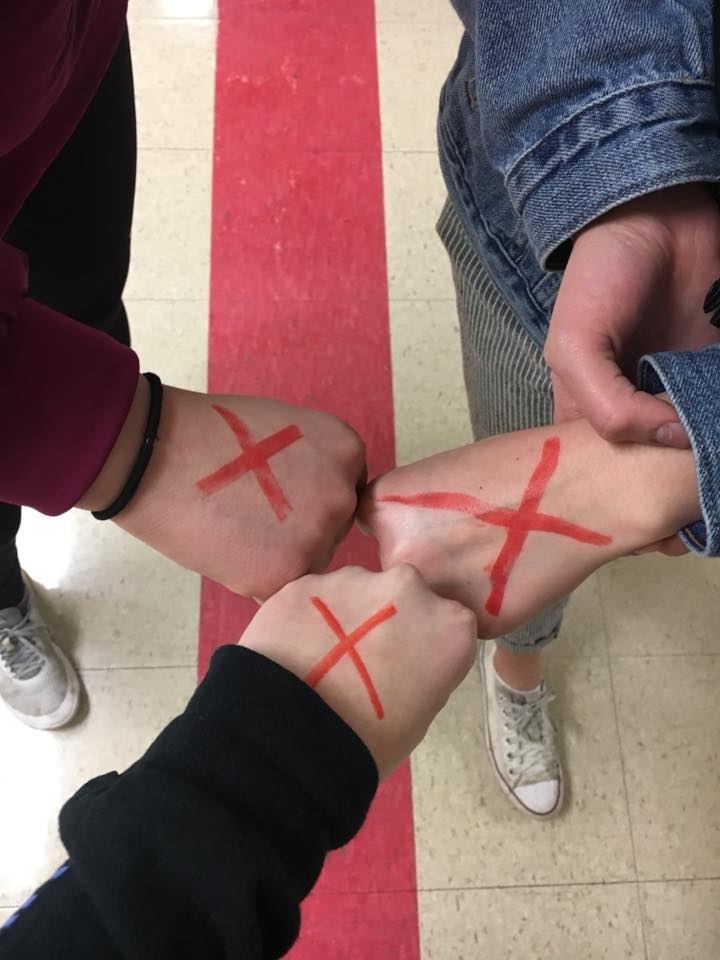
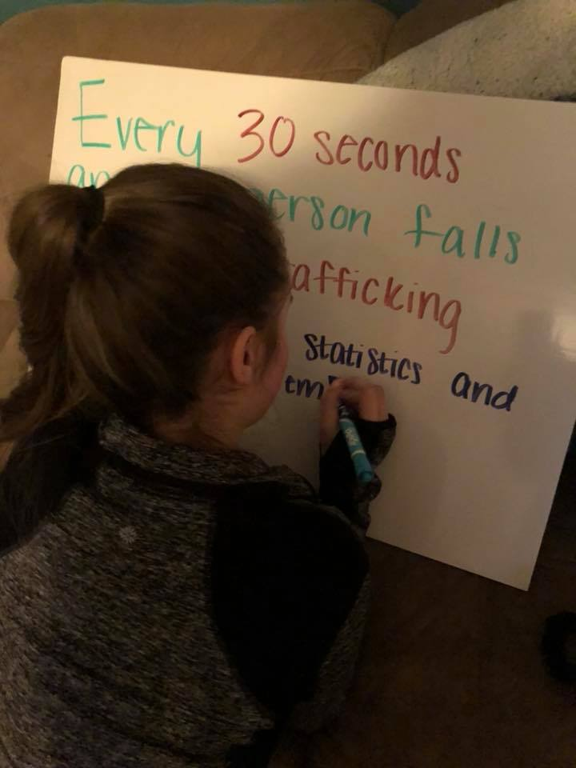

Our Mission
TAST exists to end human trafficking through embracing students, empowering them to raise awareness of trafficking, and educating them on this injustice. Students are sent out to serve in populations impacted by this oppression where students are challenged in their faith and have an opportunity to experience Jesus in a new way.
The Spirit of the Sovereign LORD is on me, because the LORD has anointed me to proclaim good news to the poor. He has sent me to bind up the brokenhearted, to proclaim freedom for the captives and release from darkness for the prisoner- Isaiah 61:1


